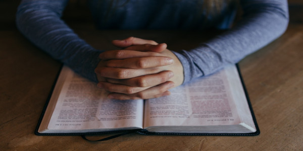

Michalovo
< ProKrasTynNárYum >
 Filosofie
Filosofie FreeSoftware
FreeSoftware GNU/Linux
GNU/LinuxFilosofie?
Lidé se zajímají o spousty různých věcí. Jestliže se já zajímám o nějakou konkrétní vec, nemůžu čekat, že se o ni budou zajímat i všichni ostatní. To dá přece rozum, ne?
Ale je zde něco, co by mělo zajímat nás všechny? Existuje něco, co se týká všech lidí nezávisle na tom, kdo jsou nebo ve které části světa žíjí?
Dle všeho takové otázky skutečně existují.
Co je nejdůležitější v životě?
Pokud se zeptáme někoho, kdo žije na hranici hladomoru, jeho odpověď bude znít: Jídlo.
Pokud stejnou otázku položíme někomu kdo mrzne, odpoví pravděpodobně: Teplo.
A pokud se třeba zeptáme člověka, který se cítí osamělý a opuštěný, jistě odpoví, že nejdůležitější v životě je přátelství a lidská společnost.
Pokud jsou všechny tyto potřeby uspokojeny, zbývá snad ještě něco, co lidé nepotřebují?
Filosofové se domnívají, že ano.
Člověk totiž dle všeho "nemůže být živ pouze chlebem". Všichni lidé samozřejmě potřebují jíst, pít i lidskou lásku a péči. Ale všichni lidé i přesto potřebují ještě něco.
Najít odpověd na otázku "Kdo jsme a proč žijeme?".
Ten kdo totiž hledá odpovědi na tyto otázky, se zajímá o něco, o čemž lidé diskutují tak dlouho, jak žijí na této planetě.
A nejlepší způsob, jak se Filosofii přiblížit, je položit si několik dalších
základních otázek:
- Jak vznikl svět?
- Je za vším co se děje nějaká vůle nebo smysl?
- Je život po smrti?
- Jak nás vůbec takové otázky napadají?
- A hlavně - Jak máme žít?
Tyto stejné otázky si lidé kladly ve všech dobách. Neznáme kulturu, která by se nezabývala tím, kdo jsou lidé a jak vznikl svět.
Toto jsou ty nejzákladnější a nejdůležitější otázky, které si v mnoha různých
obdobích lidé kladou mnoha různými způsoby neustále - a vždy s unikátní odpovědí a pohledem na věc.
Faktem je, že je mnohem jednodušší si filosofické otázky klást, než na ně odpovídat.
Do dnes si na tyto otázky musíme každý z nás nalézt vlastní odpovědi.
Žádná kniha či vědecká práce na světě nám zdá se nikdy nevysvětlí jak funguje vesmír a neodpoví nám ani na to, zda li existuje bůh či nikoliv.
A stejně tak se v žádné encyklopedii nedozvíme jak máme žit - a co je správné či špatné.
Ale přečíst si, jak jiní lidé před námi odpovídali na tyto otázky, nám může pomoci
při utváření vlastního pohledu na svět.
Přestože odpovědět na některou otázku se může zdát nesnadné, můžeme říci, že je na ni jediná - a pouze jediná - správná odpověď:
Buďto nějaký způsob života po smrti je, anebo není.
O vyřešení mnoha odvěkých hádanek a záhad se postupně postarala věda.
Jeden starověký filosof, který žil více než před dvěma tisíci lety, se domníval, že filosofie vznikla jako důsledek lidské zvědavosti.
Prohlašoval, že člověku připadá tak zvláštní, že existuje, že filosofické otázky
se vynořují sami.
Kdo jsi?
Odpověď se zdá být jednoduchá - jmenuju se Michal.
Ano, ale to je KDO?
Co kdybych se jmenoval úplně jinak, byl bych v tom případě někdo jiný? Není to legrační? Že vlastně nikdo pořádně nevíme, kdo jsme? A není nespravedlivé, že ani nemůžeme ovlivnit to, jak vypadáme? Svou podobu jsme dostali do vínku - narodili jsme se s ní. Můžeme si vybrat přátele, ale nemůžeme si vybrat sami sebe. Nevybíráme si ani to, zda li se narodíme nebo ne a zda li budeme člověk, zvíře nebo hmyz.
...a co je to člověk?...
Teď jsem na světě, ale jednoho dne budu pryč.
Jakmile se začneme zaměřovat na to, "že jsme", současně se vynořuje myšlenka, že toto naše "bytí" jednou skončí.
A zároveň to platí i obráceně.
Teprve když do hloubky pociťujeme, že jednoho dne zmizíme, dokážeme pochopit, jak je život neskutečně cenný. Jako rub a líc jedné mince, která se v letu neustále obrací. A čím větší a zřetelnější je jedna strana mince, tím větší a zřetelnější je i strana druhá.
Život a smrt jsou jako dvě strany téhož.
Člověk si nemůže dokonale uvědomovat, že je, dokud si neuvědomí, že zemře. Stejně tak není možné pomyšlení, že člověk zemře, aniž zároveň nemyslí na to, jak fantastické je žít.
Odkud se vzal svět?
Většina z nás, nemá prakticky ani tušení. Víme však, že Země je jen nepatrnou součásti obrovského vesmíru.
Ale odkud se vzal vesmír?
Samozřejmě se nabízí vysvětlení, že vesmír existoval vždycky. Pak bychom nemuseli hledat odpověď na to, odkud se vzal.
Ale MŮŽE něco existovat pořád?
Něco nám niterně říká, že ne.
Takže všechno co je, muselo někdy vzniknout?
Vesmír musel tedy také někdy vzniknout z něčeho jiného. Ale jestli vesmír v jednu chvíli vznikl z něčeho jiného, muselo to něco jiněho vzniknout zase z něšeho dalšího...
Je nám jasné, že takhle se celý problém jenom odkládá.
Když se to vezme, muselo by jednoho dne něco vzniknout z ničeho.
Ale šlo by to vůbec?
Nebylo by to stejně nepravděpodobné jako to, že svět existuje odjakživa?
Křesťanství a jiná náboženství mluví o tom, že svět stvořil Bůh. Spousta lidí se tak pokouší ukonejšit tím, že je to vlastně nejlepší řešení problému.
Ale pak začneme znovu přemýšlet - Můžeme docela dobře přistoupit na to, že svět stvořil Bůh. Ale co s Bohem samotným?
Stvořil on sám sebe z ničeho? Zase nám něco říká, že to tak není.
I když Bůh jistě dokázal stvořit to či ono, mohl těžko stvořit sebe sama ještě před tím, než měl nějaké "sebe sama", nímž by se mohl stvořit!
V tom případě zbývá jediná možnost: Bůh existoval vždy.
Ale tuhle možnost jsme už přece zavrhly! Všechno, co je, musel přece někdy z nečeho vzniknout.
Udivené dítě
Jediné, co potřebujeme k tomu, abychom byli dobrými filosofi, je schopnost divit se.
Kdyby nemluvňata uměla mluvit, jistě by nám sdělila něco o tom, do jakého podivuhodného světa přišla. Neboť přestože mluvit neumí, vidíme na nich jak ukazuji a zvědavě sahají na věci kolem sebe. Postupně příjdou i první slova - a pokaždé, když takové dítě uvidí psa, začne poskakovat v kočárku, zběsile mávat rukama a bez přestání volat "haf haf!".
A my, kteří jsme už pár let na světě, považujíc chování dítěte za přehnané odvětíme:
"Ano jistě haf haf... ale teď už laskavě hezky seď."
Nenecháme se prostě tak jednoduše unést. Psů jsme v životě viděli již nespočet.
Podobné jásání se odehraje třeba stokrát než dítě dokáže minout psa, bez toho aniž by upadlo do vytržení.
Avšak dlouho před tím, než se dítě naučí mluvit - a dlouho předtímn než se naučí přemýšlet filosoficky - se mu svět stane ZVYKEM.
Velká škoda, nemyslíte?
Dalo by se říci, že úkolem učení filosofie je, abychom se nikdy nestali lidmi, pro než je svět samozřejmostí.
Zelený mužíček
Představte si, že si jdete lesem na výlet a náhle se před Vámi z čista jasna objeví malá vesmírná loď a z ní vystoupí zelený mužíček. Postaví se takhle před vás a upřeně se zadívá...
Co vás v tu chvíli napadne?
Nenapadlo by vás někdy, že i vy sami jste vlastně takový "Mimozemšťan"? Je dost nepravděpodobné, že někdy narazíme na inteligentní život mimo naši planetu. A to ani nevíme, zda li vůbec nějaký takový život vůbec existuje...
Ale představme si - a to možné je - že takhle narazíte sami na sebe. Třeba se jednoho dne jen tak z ničeho nic zastavíte a najednou pocítíte sama sebe jako úplně jiného člověka. A třeba se to stane právě na nějakém takovém výletě v lese.
"Jsem to ale záhadná bytost, entita..."
Bude to jako byste procitli z mnohaletého spánku.
"Kdo jsem?"
Víme jenom to, že se nacházíme někde v nějakém čase a prostoru, na kamenné hroudě někde ve vesmíru...
Až takovým způsobem objevíte sama sebe, objevili jste něco, co je stejně záhadné jako onen zelný mužíček v lese, o nemž jste četli před chvílí. Nezahlédli jste jen nějakou bytost z vesmíru.
V hloubi duše pochopíte, že taková bytost jste i vy sami.
Poletující Tatínek
Uděláme si nyní takový malý myšlenkový pokus.
Jednoho rána sedí maminka, tatínek a 2-4 letý Tomáš v kuchyni a snídají. Po chvíli se maminka zvedne od stolu a obrátí se ke kuchyňské lince. Najednou začne tatínek z ničeho nic stoupat ke stropu a Tomáš se na něj dívá.
Jak myslíte, že malý Tomáš bude reagovat? Možná ukáže na tatínka a řekne
"Tatínek lítá!".
Tomáš se sice podiví, ale vezme to jako fakt. Tatínek stejně dělá tolik podivných věcí, že tenhleten letecký výlet nad stolem v jeho očích do jeho zkušenosti s otcem dokonale zapadá.
Každý den si tatínek jezdí po bradě legrační věci, která vibruje a vrní, každé ráno nasedá do divné plechové věci, ve které jezdí z místa na místo anebo do téhle divné věci ze přední strany strká hlavu a domů potom chodí černý jako černoch.
Pak je nařadě maminka. Zaslechla co Tomáš pronesl a rázně se otočí. Jak myslíte, že bude na tatínka poletujícího nad stolem reagovat ona? Upustí právě umytý talíč na podlahu a zaječí hrůzou.
Proč myslíte, že Tomáš a jeho maminka reagují tak rozdílně?
Souvisí to se ZVYKEM
Maminka se naučila, a je zvyklá, že lidé neumí létat. Tomáš ještě ne. Ještě pořád neví úplně přesně, co je na tomto světě možné a co nikoli.
No a nakonec...
Ale co svět samotný? Myslíte, že ten "možný" je? Přece i ten se více méně jen tak volně vznáší v prostoru!
Smutné je, že si postupně, jak rosteme, zvykáme nejen na zemskou tíži, ale i na svět jako takový. Jakobychom postupně, jak rosteme, ztráceli schopnost světu se podivovat. Tím však ztrácíme cosi podstatného - něco, co se znovu pokouší probudit k životu filosofie.
Protože někde v nás je něco, co nám říká, že zivot je jedna velká hádanka. A že kdysi dávno, ještě než jsme se naučili o tom přemýšlet, jsme to už sami od sebe věděli.
I když se filosofické otázky týkají všech, ne všichni se stanou filosofi. Z různých důvodu se většina lidí nechá až tak pohltit každodenností, že i samotný údiv odsune někam úplně do pozadí.
Pro děti jen svět - a všechno co v něm je - něco nového. Něco, co budí úžas. Né tak pro všechny dospělé. Většina dospělých prožívá svět jako něco naprosto obyčejného.
A právě zde tvoří filosofové čestnou vyjímku.
Filosof si totiž vlastně na svět nikdy úplně NEZVYKL.